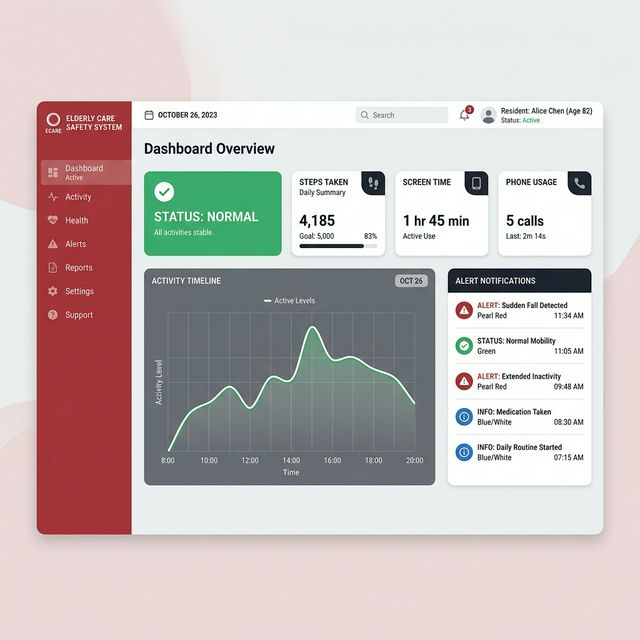

Empowering caregivers with intelligent, passive monitoring for elderly people living alone — using just their smartphone.
Millions of elderly individuals live alone, often without timely access to help during emergencies.
By 2050, the global population aged 60+ will reach 2.1 billion. Many live alone without regular human contact or monitoring.
Falls, strokes, and heart attacks can go unnoticed for hours or days. The average response time for an unmonitored elderly person is critically long.
Loneliness accelerates cognitive decline and increases the risk of depression. Regular check-ins are vital but often impractical for families.
We leverage smartphone data and AI to passively monitor daily routines, detect anomalies, and alert caregivers — no wearables, no cameras, no invasion of privacy.
Built with cutting-edge AI to provide comprehensive, non-intrusive safety monitoring.
Tracks phone usage patterns, screen time, and call activity without requiring any action from the user.
Machine learning models learn individual daily routines and establish a personalized behavioral baseline.
Isolation Forest and clustering algorithms detect deviations from normal patterns that may indicate distress.
Instantly notifies caregivers and family members when unusual activity patterns are detected.
A comprehensive web dashboard showing activity summaries, health status, alerts, and historical trends.
No cameras, no microphones, no GPS tracking. Only metadata patterns are analyzed to respect user privacy.
A streamlined pipeline from data collection to caregiver notification.
The smartphone passively collects usage data — screen time, app usage frequency, call logs, and charging patterns — without user intervention.
Raw data is cleaned, normalized, and transformed into structured features suitable for machine learning analysis.
Decision Trees, K-Means Clustering, and Isolation Forest algorithms learn the user's unique behavioral patterns over time.
The system continuously compares real-time data against the learned baseline to identify significant deviations that may signal an emergency.
When anomalies are confirmed, the system triggers immediate alerts to registered caregivers via the dashboard, SMS, or push notifications.
Built with industry-standard tools and frameworks for reliability and performance.
Core backend language for data processing, ML model training, and API development.
Decision Tree, K-Means Clustering, Isolation Forest for pattern recognition and anomaly detection.
Cloud-based and local database solutions for storing user data, alerts, and configuration.
HTML, CSS, JavaScript-based responsive dashboard for caregivers to monitor status and manage alerts.
End-to-end data flow from the user's device to caregiver notification.
Firebase stores usage data securely, with SQLite as a local fallback for offline functionality.
Python-based ML pipeline processes data in real-time, updating behavioral models continuously.
Multi-channel alert delivery via dashboard, SMS, and push notifications for immediate response.
An intuitive web interface for caregivers to monitor elderly users in real-time.

Daily overview of phone usage, screen time, and call patterns.
Real-time notifications for detected anomalies with severity levels.
At-a-glance safety status — Normal, Warning, or Critical.
Historical data visualization for long-term behavior analysis.
Why our system stands out from traditional monitoring solutions.
Uses existing smartphones — no expensive hardware, wearables, or sensor installations required.
Works entirely through the elderly person's existing smartphone — zero additional devices needed.
No cameras, microphones, or GPS. Only usage metadata is analyzed, ensuring complete privacy.
Once set up, the system runs autonomously — no daily input needed from the elderly user.
Can monitor multiple elderly individuals simultaneously through a single caregiver dashboard.
Instant notification delivery ensures caregivers can respond within minutes, not hours.
The talented developers behind this project.
Responsible for machine learning model development and system architecture design.
Handles data preprocessing, API development, and database management.
Designs and implements the caregiver dashboard and web interface.
Conducts research on elderly monitoring systems and handles quality assurance.
Have questions or want to collaborate? We'd love to hear from you.
safeguard.ai@project.edu
Department of Computer Science
University Campus
Final Year Mini Project
Academic Year 2025–2026